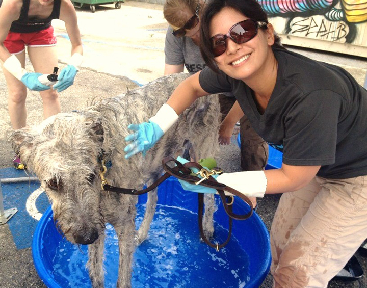

Barks, Bubbles, and Brews Kicks Off Summer at Angel City Brewery
Summer has officially arrived! Time for the return of Barks, Bubbles and Brews! On Sunday, June 29th, Much Love volunteers will be at Angel City Brewery, at 216 S. Alameda St. from 12 to 3, ready to wash your dirty dog.For a $10 donation, you’ll not only get a clean pup, but a pint of beer from the Public House, Angel City’s 19-tap bar, serving a great selection of classic and craft beer. Dogs are welcome at the Public House. If they ask nicely, they may even get a spent barley biscuit.